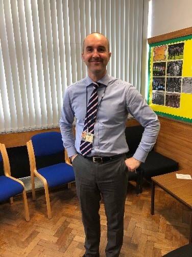

A day in the life of Mr Currie
Cara Taylor
After speaking to Mr Currie about his life around the school, he gave me a breakdown of his day. This includes his work with pupils as well as staff and the other deputes.

“I’ve worked in Balwearie High School for around 17 years. I’m very proud of the school and feel really privileged to be a part of the school.” His day starts at 8.15 am – team meeting with the Rector, other DHT’s. This is where school business is discussed.
Next: registration – a chance to speak to key pupils – one of the best parts of the day where he has a chance to make an impact on a pupil. Very conscious that he may not know a pupil well, but he’s keen to find out how they are doing overall and what help they need to do even better!
Periods 1 to 7: I’m often meeting pupils, staff or at times, parents. These conversations are really important and if they go well, add to the positive ethos of the school, help strengthen partnerships with parents and help to move things in the right direction.
He also teaches 6 periods per week – this year it’s a second-year elective class and an S3 PWW class (woodwork). This is where you get to shut the door and be a teacher again –he enjoys it a great deal. Teaching your subject is what most people come into school to be able to do – technology is great because of the variety of subjects and that it’s always moving forward.
“In between these things, being visible around the school to pupils and staff is important. I want people to be able to ask for help if they need it. I also want to make sure that our school community is a positive place to be and that pupils, staff and visitors to the school feel safe and supported. My day ends at around 6 pm. That’s when I head home to do my other job…!”
Whilst speaking to him, he wanted to make it clear that he enjoys his job more than he shows. He told me that his work with young people is incredibly important to him and he feels very lucky to be able to do so and to make an impact on young people’s lives and is grateful he has the opportunity to do so.